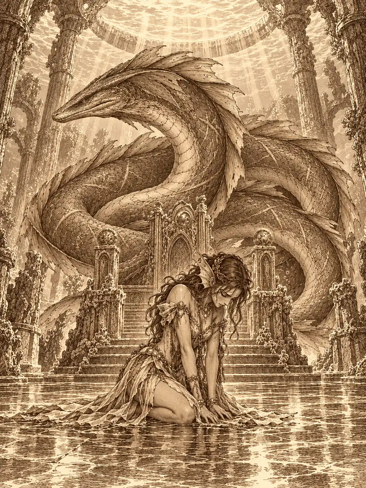

Capítulo 154
El reino bajo el mar
Libro IX · Mareas y muertos
En la mesa de guerra había un mapa de la Puerta Negra sujeto con piedras en las esquinas, y sobre él se inclinaban demasiadas cabezas. Afuera llovía. Esperaban una tercera oleada que tardaba en llegar, y la espera se notaba en la moral de las tropas, que seguía baja.
Cada uno traía a la mesa su propio cansancio. Banzo había pasado los últimos días en el astillero, ayudando a reforzar cascos con lo que había aprendido en su aldea construyendo barcos después de liberar a unos grifos, y había vuelto con la sensación agria de los tridentes que le habían apuntado en el puerto. Calista revisaba los barcos que llegaban de Puerto de las Espadas y, por las tardes, enseñaba a leer a Arwen. Serafina tenía una herida en la cabeza que todavía le dolía. Sus últimos días habían sido un enredo de Alister, de Kurobane y de un Guxi al que no sabía cómo volver; una mañana, en un puente, había estado a punto de hacer algo que no tenía vuelta, y el grito de Banzo la había detenido. Después el puente había cedido y ella había caído al mar con Guxi. Lo contaba poco y mal, y nadie le pedía más.
Jin señaló las pendientes del terreno y propuso aprovecharlas con lanceros. Ayuko lo aprobó. Banzo quería otra cosa: entrar por mar detrás de la Puerta Negra con un grupo pequeño y algunos tritones, ver lo que había allí y volver. Wel, el general tritón, aceptó ir. Calista habló de distraer a los cañones; alguien mencionó un dique. Al final se impuso la idea más sencilla, explorar en silencio y que Gelbreak los trajera de vuelta con su magia si las cosas se torcían.
No llegaron a decidir el día. Islil, la perla de rostro velado que vigilaba Kuroto en nombre de su rey, se acercó a la mesa con una caracola en las manos. Calista notó, debajo del velo, una sonrisa, y eso nunca traía nada bueno.
Dentro de la caracola había una carta escrita con una caligrafía que la shogun conocía muy bien. Se requería su presencia en la corte, de inmediato, para hablar de sus avances y de su futuro.
Calista la leyó dos veces. Todos vieron cómo se le tensaba el cuerpo. Volvió a enrollarla, la guardó y se puso en pie.
"Me temo que hay otro asunto urgente del que debo encargarme". Miró a Yasuoka, a Ayuko, a los cónsules. "Durante mi ausencia, seguid preparando las defensas para la próxima oleada, por favor".
Banzo y Gelbreak dejaron claro a Jin y a Serafina que acompañarla era cosa suya, que nadie iba a obligarlos. Los dos dijeron que sí. Antes de salir, el drow retuvo a Banzo por el brazo.
"Ese dragón puede matarla en un segundo. Es lo más poderoso a lo que nos vamos a enfrentar. Mejor no enfrentarlo de cara. Veamos cuánto podemos pasar por el aro y cuánto no".
Lo soltó y se dio la vuelta. Banzo creyó oír un gracias muy bajito.
En los muelles los esperaban Wel y dos soldados que los miraron como quien mira mercancía de segunda. Calista reunió a los suyos un momento.
"Esta es la última oportunidad de echarse atrás". Les habló despacio. Allí abajo los despreciarían por extranjeros, porque los tritones creían que la gente de la superficie era salvaje y no paraba de tirar cosas al mar. "No os fiéis de las sonrisas ni de esa forma tan honorable que tienen de comportarse. Cuando nadie mira, el honor pasa a segundo plano y solo quedan el interés y el poder. Cuidado con la comida y con los regalos". Y algo más: allí abajo las mujeres tenían menos voz. Les pidió prudencia, porque cualquier error podía costarle a ella su sitio en Kuroto.
Repartió unas bayas anaranjadas del tamaño de una ciruela pequeña, cultivadas por su pueblo. "Duelen", avisó.
Gelbreak se la comió primero y cayó de rodillas, agarrándose el cuello mientras se le abrían las branquias. A los demás les pasó lo mismo: la piel del cuello se rasgaba, los dedos se unían con membranas, los pulmones se quemaban un instante y después el agua entraba y salía como si siempre hubiera sido aire. A Banzo le seguía faltando la mano.
Podían respirar y hablar bajo el agua. Nadar como los tritones, no. Wel y sus soldados aceleraron enseguida y los dejaron atrás entre risas. Calista se quedó con ellos y nadó a su ritmo, despacio, con elegancia, moviendo solo las piernas juntas.
El mar era un desorden de colores. Les pasaban peces por los costados, se acercaban delfines curiosos que se alejaban de golpe. Serafina iba bien, era su medio. Jin intentaba caminar sobre un fondo que no existía. Banzo, que no pensaba quedarse atrás, buscó un animal grande, una tortuga del tamaño de una barca, y con un poco de magia se la ganó: se agarró a su caparazón y empezó a avanzar con las corrientes.
Tres tiburones los olieron. Uno fue derecho a la tortuga, que escondió la cabeza, y le dio a Banzo un mordisco en el brazo. El goliat les rugió en la cara. Gelbreak intentó apartar a otro con un hechizo y falló. Entonces Calista se puso delante de los tres y les habló. No los tocó. Los tiburones se calmaron, se acercaron a ella y se dejaron coger de las aletas.
"No os harán daño. Solo tenían hambre".
Así llegaron, tirados por tiburones, hasta la entrada de Aistia, donde Wel los esperaba con cara de decepción.
"Vaya, sí que habéis tardado".
La ciudad se extendía a lo largo de una grieta enorme que se hundía en el fondo del mar. En las paredes de la grieta había casas de coral y de conchas gigantes, todo en morados, azules y amarillos, y unas plantas luminosas que daban a las calles una luz de fiesta. Parecía un lugar acogedor. Calista les había dicho lo contrario.
Les enseñó un pilar antiguo con la figura de un tritón tallada. Era el dios de su raza, el padre de todos ellos, nacido del plano del agua. No lo confundía con el rey dragón, aunque allí abajo veneraran a los dos.
Banzo quiso ver las monturas. En las caballerizas, una mujer se inclinó ante Calista con una reverencia tan exagerada que al goliat se le torció el gesto. La shogun lo llamó respeto. Banzo vio miedo. Le dejaron montar un hipocampo, y el goliat se aferró al cuello del animal como a una roca mientras daba vueltas entre las cuadras. Mientras tanto, Serafina le dio un leve empujón a Jin hacia un pulpo con el que no había que bromear, y el pulpo lo cubrió de tinta de la cabeza a los pies.
Devolvieron la montura y bajaron por la grieta. A medida que descendían, la luz se apagaba y los que no veían en la oscuridad nadaban casi a ciegas, hasta que al fondo apareció un palacio de mármol blanco con columnas, formas redondeadas y alguna torre. Calista fue limpiando a Jin por el camino; no pensaba presentarlo sucio.

En la puerta, dos guardias cruzaron los tridentes.
"Soy Calista Nautireida", dijo ella en la lengua de los tritones. "Vengo a responder a mi llamamiento".
Los guardias levantaron las armas. "Sentimos no haberla reconocido, perla Calista".
Solo Serafina, que entendía aquella lengua, oyó la palabra perla. Calista se giró hacia ellos con la cara inmóvil y las aletas de la cabeza erizadas como lanzas. "Bien. Vamos a entrar. Preparaos, por favor". Les pidió que dejaran las armas, y las dejaron.
La sala del trono era enorme, con columnas y una cúpula abierta en el centro por un gran agujero. Al fondo, tres reyes tritones sentados y un trono más alto, vacío. A un lado, las perlas, mujeres como Islil. Al otro, los generales, entre ellos Wel.
Calista hizo una reverencia larga y no se levantó hasta que uno de los reyes se lo indicó con la mano. Los reyes accedieron a hablar en la lengua común, para que los extranjeros entendieran, como quien se rebaja.
"Así que estos son los famosos cazadores. No parecen gran cosa". Uno de ellos se fijó en Banzo. "Vaya, a uno le falta una mano. ¿Un líder manco?".
Le reprocharon a Calista sus informes, sobre todo lo que contaba del guardián. Ella dijo que ya había tomado medidas y que pronto nombraría otro. Desde el fondo de la sala llegó un gruñido. Los reyes dijeron que esperaban que fuera un tritón. Ella respondió que sería alguien digno del cargo, sin dar ningún nombre.
Luego hablaron de sustituirla por una perla más capaz. Calista argumentó que alguien nuevo tardaría en conocer la tierra, las costumbres y la gente, y que en plena guerra un cambio así podía provocar un levantamiento. Los reyes respondieron que para eso estaban los cazadores, para explicarles cómo iban las cosas.
Calista presentó a su comitiva. Ninguno se arrodilló. Uno de los reyes se burló de lo salvajes que eran los de la superficie, y ella contestó que los mejores guerreros eran así y que era la primera vez que pisaban una corte tan sofisticada.
"Con el tiempo que llevas allí deberías haberles enseñado ya".
La voz venía de detrás. Una de las perlas se había adelantado. Calista la saludó por su nombre, Aqua, la mayor de las perlas, y Aqua cruzó la línea que separaba a los presentes, nadó alrededor de Gelbreak y lo miró de cerca.
"¿Todavía sigues embelesada con estas criaturas?". Y a él, en voz baja: "Ten cuidado. Matar a dos de nuestros soldados crea enemigos".
Calista apretó la mandíbula. "Ser amado y ser odiado es haber triunfado".
Aqua pasó nadando por encima de todos ellos y se detuvo delante de Jin, que pensaba, sin abrir la boca, que siguieran subestimándolos, que cuando fuera tarde no se lo esperarían.
"¿El qué?", dijo Aqua. "¿Qué no nos esperaremos?".
Jin no apartó los ojos. Ella le leía la mente y él le respondió con la misma confianza desafiante. Aqua sonrió, y Jin se quedó paralizado: no podía mover ni un dedo. La perla le acercó las manos y empezaron a salirle chispas eléctricas entre los dedos.
Calista intervino. Prometió que corregiría la afrenta, que les enseñaría a comportarse como debían. Aqua apagó los rayos, liberó a Jin y volvió a su sitio mirándolo por encima del hombro. Los reyes decidieron aplazar la cuestión hasta la cena del día siguiente. Allí discutirían el destino de la señorita Calista.
Se estaban retirando cuando una sombra enorme pasó sobre la sala y todas las luces menguaron a la vez.
"Un momento, Calista".
Ella se arrodilló en el acto y bajó la cabeza. Los que estaban cerca le vieron temblar las manos.
Por el agujero de la cúpula descendió algo larguísimo, con aletas extrañas y una cola que parecía no terminar nunca. Pasó por encima de los tronos y se posó detrás de ellos. Era un dragón de agua viejísimo, cubierto de cicatrices, y cuando alzó la cabeza todos sintieron una presión en el cráneo que no se parecía a nada. Las perlas y los generales se postraron. Los tres reyes agacharon la cabeza.
Jin le sostuvo la mirada un par de segundos antes de arrodillarse. En ese tiempo notó que el agua a su lado se congelaba. Apartó los ojos y el hielo desapareció.
Gelbreak se quedó de pie.
"El guardián. Bienvenido otra vez". Una ola les levantó la cabeza a todos. "Y bien, Calista. ¿Cómo van tus quehaceres?".
"Todo va según lo que usted planeó. Kuroto está bajo el mandato de los tritones y la guerra continúa. La crisis está resuelta".
"He oído cosas sobre ti que no me gustan. Las discutiremos mañana". Pasó a la lengua común. "Ahora quiero que me expliques algo". De debajo de su cuerpo sacó una esfera de agua y la sostuvo entre dos uñas. "¿Qué es esto y por qué me lo enviaste?".
Calista tardó un instante en responder. La esfera había servido para cerrar un trato que le daba más poder en la superficie, explicó, y el trato ya estaba cerrado. La había enviado allí para protegerla, porque su anterior dueña era un peligro para todo el reino de arriba.
"Pues ya que el problema está resuelto, llévatela de aquí".
La soltó, y una corriente la arrastró hasta los pies de la shogun. Calista la hizo subir con su propio dominio del agua para recogerla sin agacharse otra vez. El dragón abrió sus aletas, el agua se agitó tanto que todos tuvieron que agarrarse a algo, y salió por el techo.
"Larga vida al dios rey dragón", dijo Calista en su lengua.
Cuando se volvió hacia ellos, le vieron en los ojos lo que había estado escondiendo: terror. No dijo una palabra.
Les dieron dos habitaciones. Las puertas no tenían llave.
En la suya, Calista se dejó caer contra la cama con la respiración rota, y con las últimas fuerzas lanzó un conjuro de silencio junto a la entrada. Luego se derrumbó. Gelbreak la abrazó y le ofreció sacarla de allí en ese mismo momento. Ella negó. Si perdía su puesto, los dos volverían a estar sometidos.
"No dejaré que te sustituyan", le dijo él. "Ni que te maten".
En la otra habitación, Banzo, Jin y Serafina se apartaron de la puerta todo lo que pudieron. Serafina había entendido mucho más que ellos, y estaba asustada por Jin.
"¿Y si Calista entrega Kuroto para salvarse?", dijo Banzo en voz muy baja.
Ni Jin ni Serafina lo creían. Confiaban en ella. Querían proteger el país y, si podían, ver libres a Calista y a Gelbreak. Acordaron no hacer nada todavía, sobrevivir a aquella visita y hablar en la superficie. Serafina le dio a Jin un golpe en el hombro por lo que había hecho delante de Aqua, y él se frotó el hombro sin quejarse.
Al otro lado de la pared, Calista y Gelbreak hablaban de contar más secretos de los que habían contado nunca, y de buscar a Banzo antes de que llegara la cena.